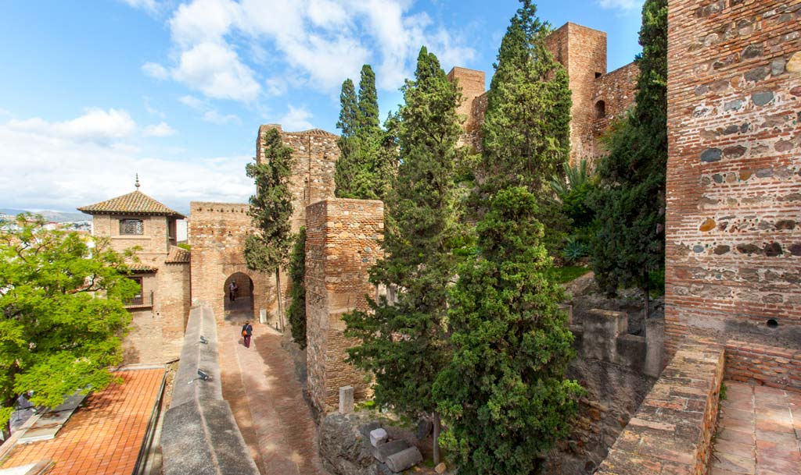
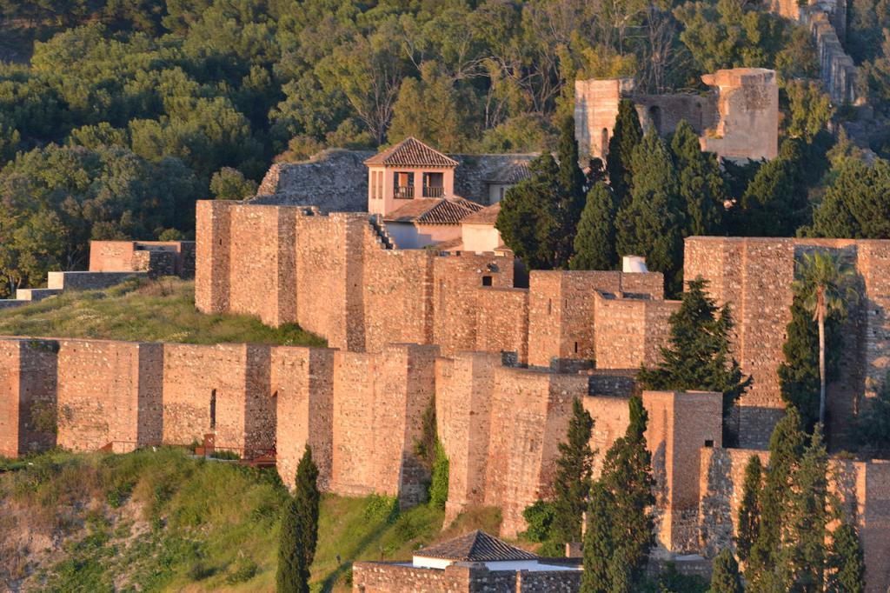
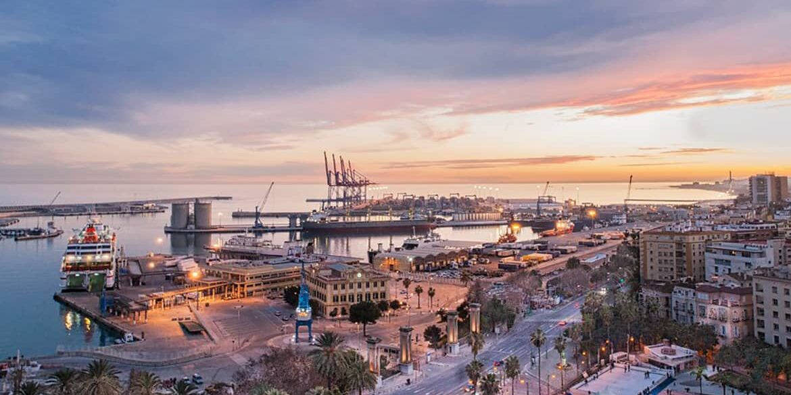
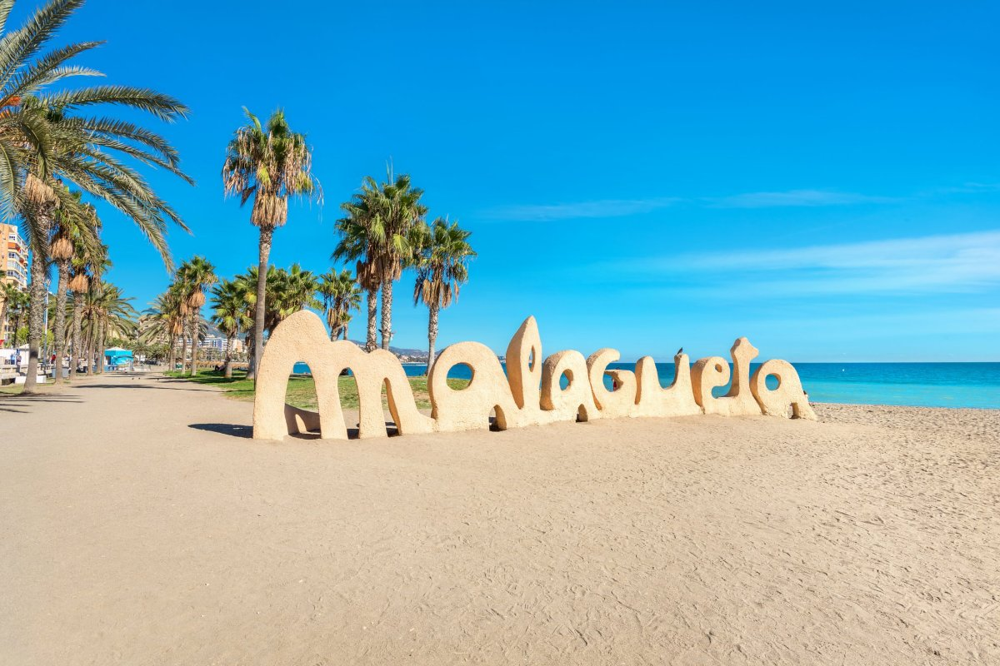
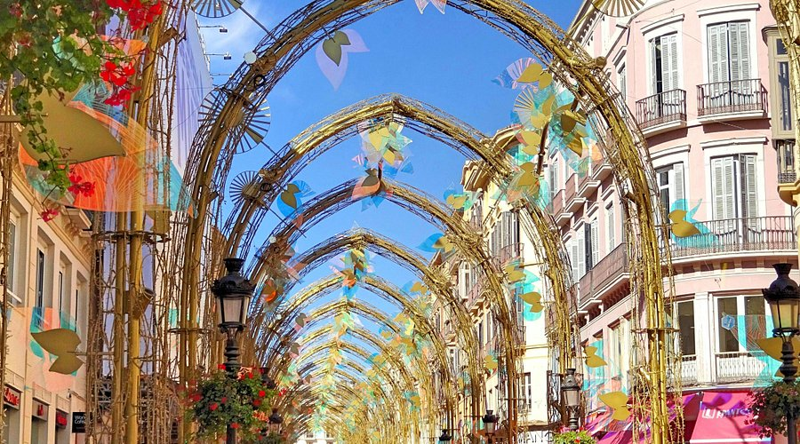

La Alcazaba
- The Alcazaba of Málaga is one of the city’s most important tourist attractions, a Moorish fortress-palace built in the 11th century that combines history, architecture, and stunning views.
- Historical significance: Built in the 11th century by the Hammudid dynasty, it served as both a fortress and a palace.
- Architecture: Features double walls, defensive towers, and beautiful courtyards inspired by Islamic design.
- Cultural value: Considered one of the best-preserved Muslim fortresses in Spain.
- Tourism: Visitors can explore gardens, fountains, and palace rooms, making it a must-see for history lovers.
- 📍 C. Alcazabilla, s/n, 29012 Málaga, España

Castillo de Gibralfaro – Málaga’s Hilltop Fortress
- The castle’s hilltop location provides one of the most spectacular sunset views over Málaga, the port, and the Mediterranean Sea, making it a favorite spot for photographers and visitors alike.
- Built in the 14th century to protect the Alcazaba and the city.
- Located on Mount Gibralfaro, offering panoramic views of Málaga and the Mediterranean.
- Famous for its defensive walls and towers, which visitors can walk along.
- Houses a small military museum with exhibits on the fortress’s history.
- Accessible by foot, bus, or car from the city center.
- A must‑see attraction for its combination of history, architecture, and breathtaking scenery.
- 📍 Address: Camino de Gibralfaro, s/n, 29016 Málaga, Spain

Málaga Cathedral – La Manquita
- Built between the 16th and 18th centuries, blending Renaissance and Baroque styles.
- Nicknamed La Manquita (“the one‑armed lady”) because its second tower was never completed.
- Located in the historic center, near Calle Larios and the Roman Theatre.
- Features an impressive façade, choir stalls, chapels, and stained‑glass windows.
- Offers visitors a mix of religious heritage, art, and architecture
- The cathedral’s interior features ornate chapels, carved choir stalls, soaring Renaissance ceilings, and rich artistic decoration.
- 📍Calle Molina Lario, 9, 29015 Málaga, España

Picasso's Museum
- Opened in 2003, fulfilling Picasso’s wish to have a museum in his birthplace
- Located in the Palacio de Buenavista, a 16th‑century building blending Renaissance and Mudéjar styles.
- Houses a permanent collection of over 230 works, covering nearly 80 years of Picasso’s artistic evolution.
- Exhibits range from early sketches to late masterpieces, offering a full view of his creative journey.
- Hosts temporary exhibitions, workshops, and cultural events, making it a dynamic center of art.
- The museum displays Picasso’s works across decades, from early sketches to late masterpieces, offering visitors a rich journey through his creative evolution and artistic legacy.
- Website: https://www.museopicassomalaga.org/en
- 📍 Address: Palacio de Buenavista, Calle San Agustín, 8, 29015 Málaga, Spain.
Malaga's Port
- One of the oldest ports in the Mediterranean, with origins dating back nearly 3,000 years.
- Today it serves as a modern cruise and commercial port, welcoming thousands of visitors each year.
- Features the Muelle Uno waterfront promenade, with shops, restaurants, and cultural spaces.
- Offers stunning views of the city skyline, the Alcazaba, and Gibralfaro Castle
- A lively area for walking, dining, and leisure, blending maritime tradition with modern lifestyle.
- - The Port of Málaga blends ancient maritime tradition with modern leisure, featuring cruise terminals, cultural spaces, and the lively Port Uno promenade where visitors enjoy restaurants, shops, and panoramic views of the city and Mediterranean Sea.
- - 📍 Address: Puerto de Málaga, Muelle Uno, 29015 Málaga, Spain

Playa de La Malagueta – City Beach
- Located just east of the port, within walking distance from Málaga’s historic center.
- A popular urban beach with golden sand, palm trees, and a lively promenade.
- Offers a wide range of chiringuitos (beach bars) serving fresh seafood and local specialties.
- Equipped with sunbeds, showers, and sports areas, making it ideal for relaxation and leisure.
- Attracts both locals and visitors, especially in summer, for swimming and socializing.
- Málaga’s La Malagueta Beach is a lively urban stretch of golden sand with palm trees, chiringuitos serving fresh seafood, and a promenade perfect for strolling, sunbathing, and enjoying views of the Mediterranean.
- 📍 Address: Playa de La Malagueta, Paseo Marítimo Pablo Ruiz Picasso, 29016 Málaga, Spain.

Larios Road – Shopping and Leisure
- Calle Larios is Málaga’s most famous shopping street, known for its elegant 19th‑century architecture.
- Lined with boutiques, cafés, and international brands, it is the city’s retail heart.
- Hosts major cultural events, including the spectacular Christmas lights and Semana Santa processions.
- A lively pedestrian avenue, perfect for strolling, shopping, and enjoying the city’s vibrant atmosphere.
- Connects the historic center with the port, making it a natural meeting point for locals and visitors.
- Calle Larios, Málaga’s elegant pedestrian avenue, is lined with boutiques, cafés, and historic buildings, offering a lively atmosphere for shopping, strolling, and enjoying cultural events in the heart of the city.
- 📍 Address: Calle Larios, 29015 Málaga, Spain.
